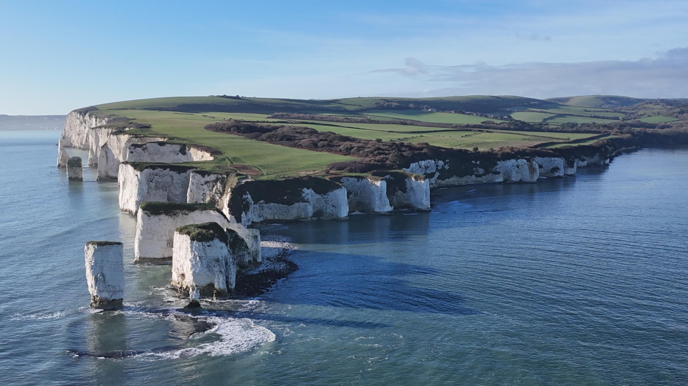
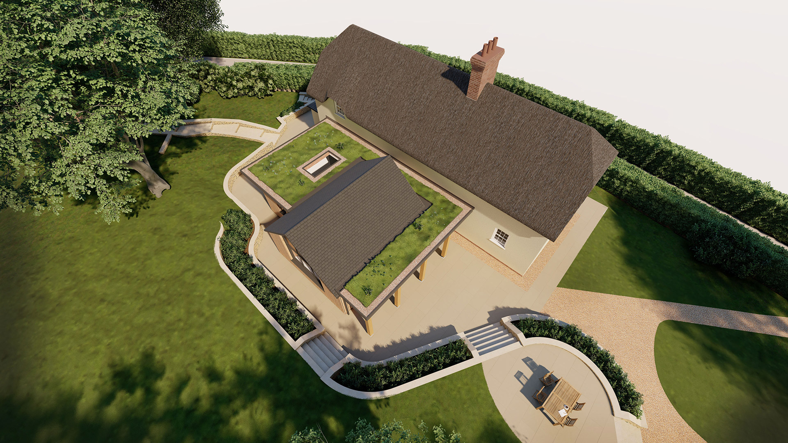

The Setting
On the Edge of
England
Studland is a village that feels like it exists at the edge of time. Tucked into the eastern tip of the Isle of Purbeck, where chalk downland tumbles into Studland Bay, it is a place shaped equally by geology and by solitude.
To the east, the great chalk headland of Handfast Point breaks apart into the sea stacks of Old Harry Rocks — the easternmost point of the Jurassic Coast UNESCO World Heritage Site, where 80-million-year-old Cretaceous chalk stands sentinel against the Channel. On a clear day, you can see the Needles on the Isle of Wight; the two formations were once joined, before the sea carved the Solent between them.

To the west, Studland Heath stretches inland — a rare lowland heath of European importance, home to all six native British reptile species. To the south, the ridge climbs toward Nine Barrow Down with its Bronze Age burial mounds. The village sits within both the Dorset Area of Outstanding Natural Beauty (now a National Landscape) and the Studland Conservation Area, a designation recognising its exceptional architectural and historic character.
Studland remained remarkably isolated until the twentieth century. There was no ferry across the harbour mouth to Sandbanks until 1926, and no proper road before the Ferry Road was built. The Bankes Estate owned more than 95% of the land and was resistant to development. The result is a village that retains an unusual integrity — a scatter of stone and thatch around a Norman church, largely unchanged in form for centuries.
At the heart of the village stands St Nicholas Church, built in the early twelfth century on the foundations of an earlier Saxon church. Nikolaus Pevsner described it as “one of the most complete Norman village churches in England.” Its squat central tower, three-cell plan of nave, chancel and sanctuary, and beautifully carved Norman arches have survived largely unaltered for nine hundred years. The corbel table beneath the roofline carries grotesque and lascivious carvings — a sheela-na-gig, grinning faces, farm animals — that have watched over the village since the time of Henry I.
It was immediately beside this church, on Manor Road, that Church Cottage stood for three centuries. The two buildings shared more than proximity; they shared a history of ecclesiastical ownership, of chalk and stone, of patient endurance against the Dorset weather.
